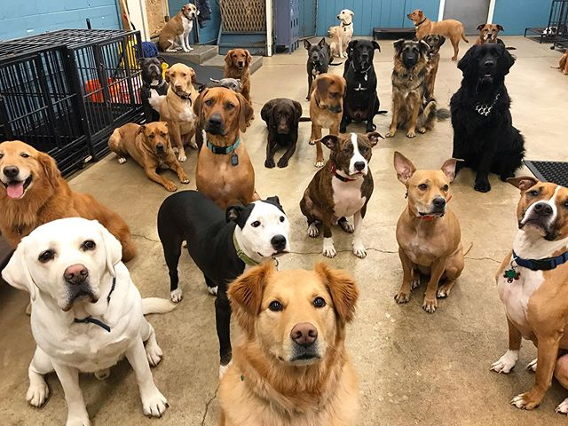
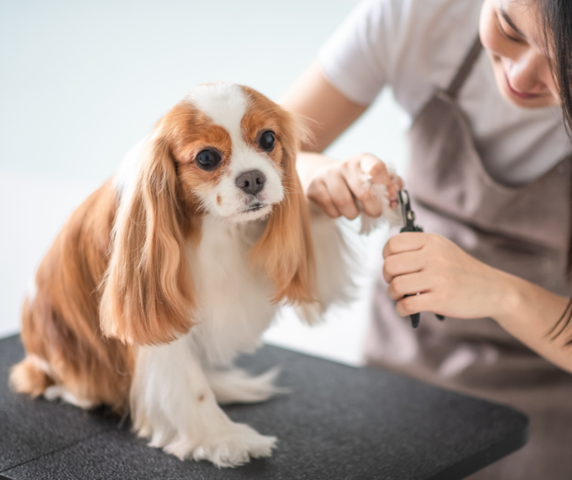
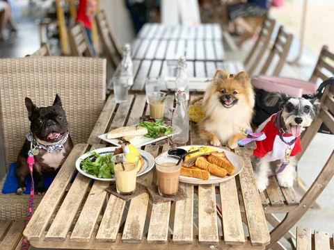

Ollie's Corner offers a full spectrum of services to cater to your dog's well-being, including dog
daycare, grooming spa, a dog-friendly café, professional training, and a premium retail section. We also
host community events to connect fellow dog lovers. Your dog's happiness and your peace of mind are our
top priorities.
Daycare

Daycare
Our state-of-the-art dog daycare is a place where your dog can unleash their boundless energy and
socialize with other dogs in a safe and supervised environment. Our spacious play areas are designed
with your dog's needs in mind, featuring various activities, toys, and comfortable resting spots.
Our dedicated and experienced staff ensure that your dog's day is filled with fun, exercise, and
social interaction, promoting a happy and well-adjusted pup.
Spa

Spa
At Ollie's Corner, we believe in pampering your pet like royalty. Our spa services are designed to
provide the utmost relaxation and rejuvenation for your dog. From luxurious baths and grooming to
soothing massages, our experienced groomers and spa therapists will make your dog look and feel
their best. We use top-quality products and techniques to cater to your dog's unique coat and skin
needs
Café

Cafe
Our dog-friendly café is the perfect spot for you and your pup to unwind together. While your furry
friend enjoys some tasty, pup-approved treats, you can sip on a delicious cup of coffee, tea, or
indulge in a scrumptious meal from our human-friendly menu. Our outdoor seating area allows you to
enjoy the fresh air, relax, and socialize with other dog-loving patrons.